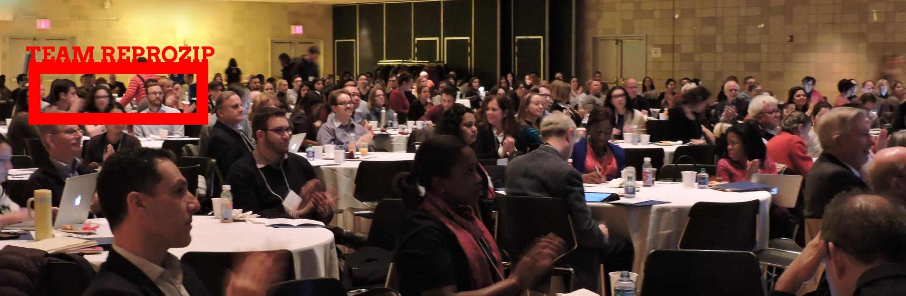

December Post
Last week, I went out to Columbia University on the upper west side to attend the Promoting Credibility, Reproducibility, and Integrity in Research (PCRI) Symposium. This "a one-day symposium to showcase a robust discussion of reproducibility and research integrity among leading experts, high-profile journal editors, funders and researchers. This program revealed the "inside story" of how issues are handled by institutions, journals and federal agencies and offered strategies for responding to challenges in these areas. Researchers in all stages of their career joined for a stimulating discussion. We are looking forward to continuing the discussion in a future event." (from the PCRI website).
Remi, Fernando, and I headed up to Columbia last week to . The bibliography
The program for the Symposium was stacked with exactly zero early-to-mid career folks. The panels were also
The ReproZip team in a larger photo from the PCRI Symposium.
One of my favourite moments from the Symposium was hearing Victoria Stodden speak for the first time -- besides the fact she did a lot for bringing attention to the theories around reproducibility, she also did this:
I REALLY appreciate .@victoriastodden calling out librarians as knowing abt data mgmt & repro & contributing to research. #pcrisymposium
— Vicky Steeves (joinmastodon.org) (@VickySteeves) December 9, 2016
Librarians who work with data management and reproducibility aren't very much cited or discussed by other researchers -- Victoria Stoddent, a very well-known figure in the field, shouting us out .
If it takes you months to reproduce your own data & code, your publication can't be trusted. Period. #pcrisymposium
— Vicky Steeves (joinmastodon.org) (@VickySteeves) December 9, 2016